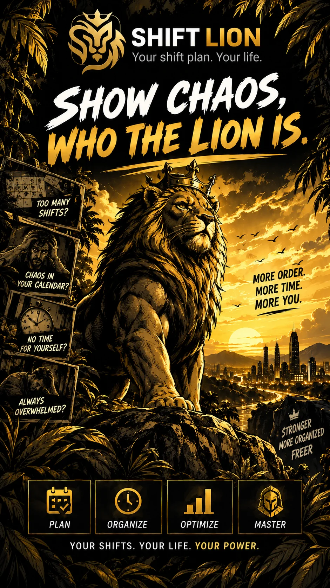
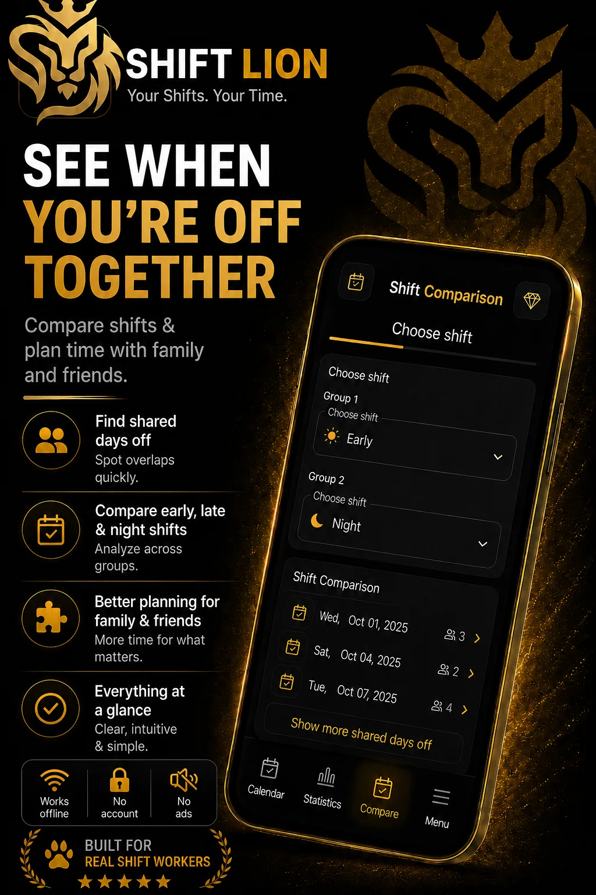
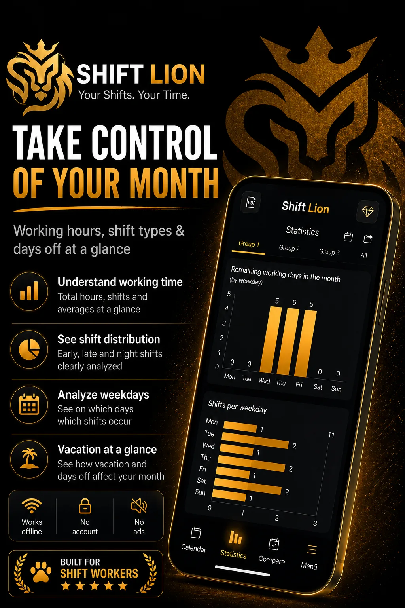
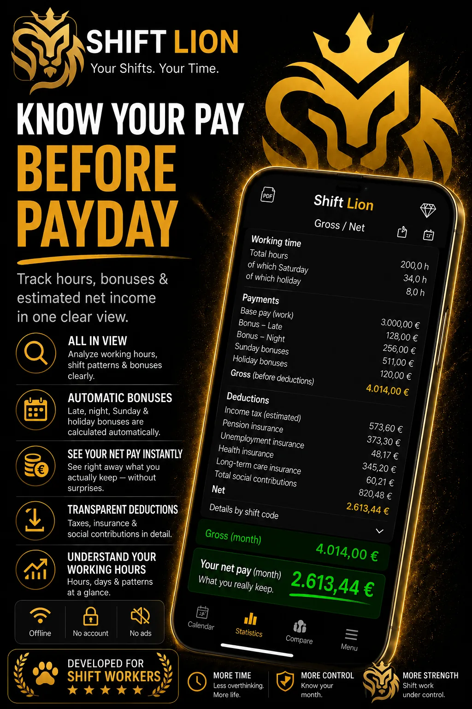
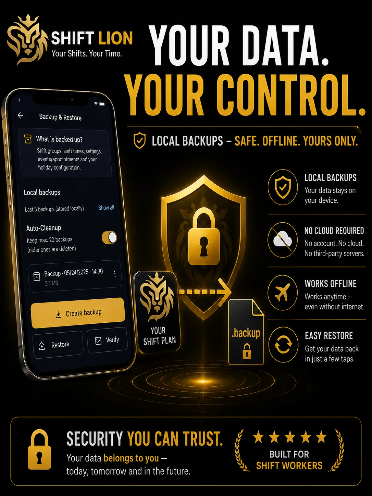

Shift planner app for early, late and night shifts
Shift Lion is a free-to-install Android app for personal shift planning. It works offline and without a mandatory account; optional premium features are available as in-app purchases. Build your own rotations, find shared days off and review planned working hours and estimated pay. The app does not create employer rosters.
Download Shift Lion for Android
What is a personal shift planner?
A personal shift planner helps workers organize early, late and night shifts, rotating schedules and days off. When working times change throughout the week, a digital shift calendar can be easier to maintain than a paper diary or a spreadsheet.
Shift Lion lets you save your own repeating rotation and plan work, leave, appointments and free time in one place.
What can you do with Shift Lion?
Plan every shift type
Create early, late, night and custom shifts with your own names, abbreviations, colors and working times.
Build custom rotations
Set up repeating shift patterns and choose an individual start date for each rotation.
Manage multiple groups
Keep several shift groups and different rotation systems visible at the same time.
Track leave and days off
Add vacation, free days and personal changes directly to your shift calendar.
Organize appointments
Place personal, work-related and repeating appointments beside your scheduled shifts.
Compare schedules
Compare shift groups and find shared days off with your partner, friends or colleagues.
Review statistics
See how early, late, night and other shift types are distributed across a month or year.
Review planned hours
Use stored shift times to understand your planned working time.
Estimate pay and premiums
Use your shifts and settings for a non-binding estimate. Results are not payroll, tax, legal or financial advice.
Export your calendar
Use iCal for Google Calendar and compatible calendar apps, or create a PDF overview.
Back up locally
Create a local backup and restore your personal planning data when needed.
Use it offline
Plan locally without mandatory registration, advertising or a cloud requirement.
Shift planner, employer roster and time clock: the difference
Personal shift planner
Copy your own assigned shifts into a personal calendar and organize life around them.
Employer roster
Your employer remains responsible for assigning staff and publishing the official roster. Shift Lion does not replace workforce-management software.
Not a live time clock
Shift Lion evaluates planned times stored with your shifts. It is not a clock-in and clock-out attendance system.
Your shift routine at a glance
Real views from the English version show how schedule comparison, statistics, pay estimates and local backup work together.




Suitable for — and not designed for
Shift Lion is deliberately a personal planner. This distinction helps you decide whether it fits your purpose.
Shift Lion is suitable for
- individual shift workers using Android
- early, late, night and rotating shifts
- custom rotations and several shift groups
- leave, appointments and personal changes
- finding shared days off
- personal working-time and pay estimates
Shift Lion is not designed for
- employer workforce planning
- assigning shifts to an entire workforce
- staff approval and leave-request workflows
- live clock-in and clock-out attendance tracking
App, browser planner or workforce software?
These options solve different problems. The comparison focuses on their intended use, not on individual providers.
| Feature | Shift Lion app | Online shift planner | Workforce software |
|---|---|---|---|
| Main purpose | Organize your personal shift routine long term | Display a basic repeating pattern quickly | Manage staff and official company rosters |
| Where it runs | Android app | Browser on phone or computer | Depends on provider |
| Mandatory account | No | No | Depends on provider and employer |
| Offline use | Yes, personal planning remains local | No, the website is required | Depends on provider |
| Custom rotations | Yes, saved with personal changes | Yes, as a recurring month or year view | Depends on the company system |
| Shared days off | Yes, by comparing shift groups | Available through the free comparison tool | Usually not the personal focus |
| Pay overview | Personal, non-binding estimate | Not part of the online planner | Depends on payroll integration |
| Assign employees | No | No | Yes, designed for this purpose |
Benefits of a digital shift calendar
- keep shifts, leave and appointments in one place
- recognize days off more quickly
- understand changing rotations at a glance
- compare several shift groups
- review planned hours and shift distribution
- reduce reliance on paper calendars and spreadsheets
Frequently asked questions
Is Shift Lion an employer scheduling app?
No. Shift Lion is a personal planner for individual shift workers. It does not create or publish official staff rosters for employers.
Can I create my own rotation?
Yes. Define custom shift types, times and repeating patterns with flexible start dates.
Can I manage and compare several schedules?
Yes. Multiple shift groups can be saved and compared to find shared time off.
Is Shift Lion a time-tracking app?
It summarizes planned working times based on saved shifts, but it is not a live clock-in and clock-out system.
Does Shift Lion calculate pay?
The app provides a non-binding gross and take-home-pay orientation based on your entries. It does not replace payroll or professional tax, legal or financial advice.
Does it work offline and without an account?
Yes. Personal planning can be used locally without a mandatory account or cloud connection.
Is Shift Lion free?
Shift Lion is free to install. Optional premium functions are available through Google Play as in-app purchases.
Shift planner for Android
Shift Lion is currently available for Android through Google Play. Features and availability may change with future app versions or vary by region.
Download Shift Lion for AndroidShift Lion and Master in Pocket
Shift Lion is the app and website name. Master in Pocket operates this website, is listed as the Android app's developer on Google Play and manages the app, website and support.
The visible core features were aligned with the official Google Play listing on . They include shift planning and comparison, leave and appointments, planned working time and pay estimates, statistics, export, backup and use without a mandatory account.
Official Master in Pocket developer profile on Google Play → · Contact and support →
Your personal shift calendar in the app
Plan your own rotation, private appointments, leave and shared days off permanently on your phone.
Your shifts. Your days off. Your overview.
Keep shifts, free days, appointments and shared time together in one personal calendar.
Download Shift Lion for Android